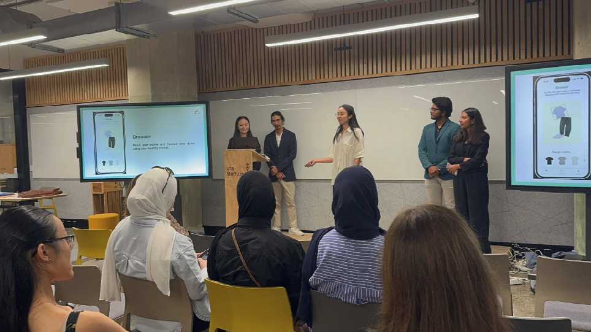
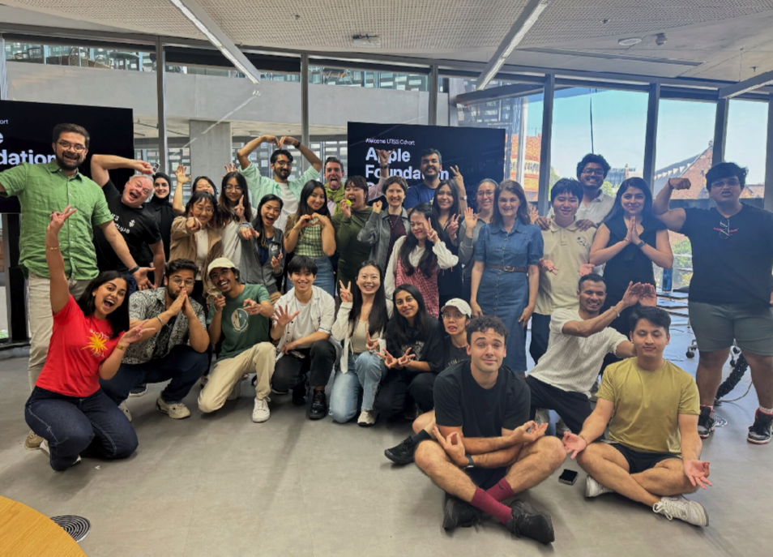
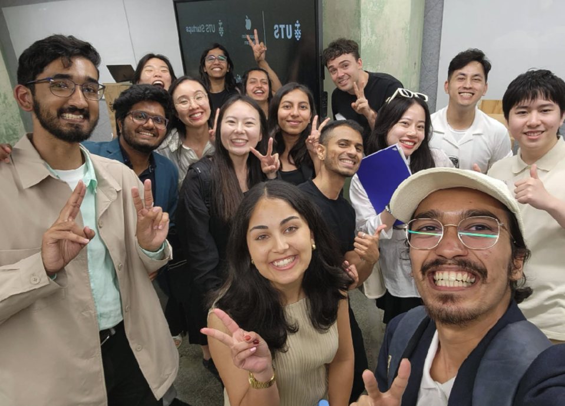

StyleMate
An iOS app that helps users wear more of what they already own.

The real barrier isn't knowing —
it's forgetting.
Everyone knows fast fashion is wasteful. But our user interviews revealed a different root cause: people forget what they already own, leading to impulse purchases they didn't need.
An app that makes your existing wardrobe feel new.
Digital Wardrobe
A visual inventory of everything you own — so you stop buying what you already have.
Smart Dresser
Outfit suggestions built from your existing clothes — so getting dressed doesn't mean buying something new.
From insight to working prototype in 3 weeks.
Research → Reframe
People aren't resistant to sustainability — they just forget what they own. That insight reframed everything.
Ideation → Prioritise
Lotus Blossom ideation, then cut aggressively to two features that directly addressed the insight.
Prototype → Refine
Mapped 3 user story flows before touching Figma. One feedback round, then straight to Hi-Fi.
Working iOS prototype.
Delivered in 3 weeks.
Presented at Apple Foundation Program Demo Day · UTS, November 2024


